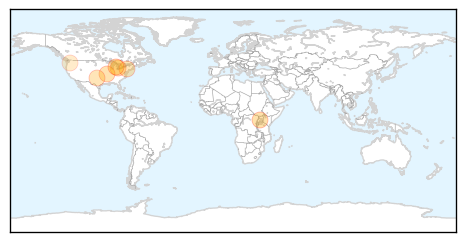

West Nile Virus
30-Day Web Trend
1 alerts, 0 warnings

30-Day Twitter Trend
1 alerts, 0 warnings

Article Locations
Article Confidences
Top Articles:
- 0.990
- Two cases of West Nile Virus confirmed in Oakland County
- 0.988
- Case of West Nile virus confirmed in Algarve
- 0.936
- Local man’s sick horse could have West Nile
- 0.922
- Two deaths in St. Louis area from West Nile virus
- 0.852
- Dr. Deborah Asnis Passes Away At 59 Due To Breast Cancer
- 0.839
- West Nile confirmed in Jackson County
- 0.613
- Health officials investigating dead crows in Millwood
Top Tweets:
-
No tweets found for Sep 18, 2015
Meningitis
30-Day Web Trend
0 alerts, 0 warnings

30-Day Twitter Trend
0 alerts, 0 warnings

Article Locations

Article Confidences
Top Articles:
- 0.981
- Health officials investigating Salmonella cases linked to Chipotle restaurants in Minnesota
- 0.958
- Meningitis case confirmed, student seeking treatment
- 0.950
- DRC: More than 500 people fall victim to drug poisoning in the Ariwara region, Ituri
- 0.943
- DRC: More than 500 people fall victim to drug poisoning in the Ariwara region, Ituri - Democratic Republic of the Congo
- 0.914
- Laois Nationalist — Brush with death provokes Laois woman to seek free meningitis vaccine for kids
- 0.843
- A Listeriosis Outbreak, A Cheese Recall, Little Info
- 0.687
- Roger Daltrey struck down by meningitis forcing The Who to scrap entire tour Roger Daltrey struck down by meningitis forcing The Who to scrap entire tour
- 0.648
- Mother fights for Meningitis B vaccine - Story
- 0.601
- Maine epidemiologist recommends good hygiene to stop viral meningitis
- 0.523
- Government of Gibraltar Press Release
- 0.505
- Drug resistance on the rise as bacterial infections rampage
Top Tweets:
-
No tweets found for Sep 18, 2015